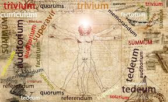

ETIMOLOGIAS
Me gusta la materia de Etimologías porque me ayuda a comprender el origen y significado real de las palabras que usamos todos los días. Al conocer de dónde provienen, especialmente del latín y del griego, puedo entender mejor su estructura y relacionarlas con otras palabras similares. Esto facilita mi comprensión en otras materias y mejora mi vocabulario.
Además, me parece interesante descubrir cómo las palabras han cambiado a lo largo del tiempo y cómo reflejan la historia y la cultura de diferentes pueblos. Estudiar etimologías no solo es aprender raíces y prefijos, sino también desarrollar una mayor habilidad para analizar y entender el lenguaje. Por eso considero que es una materia útil e importante para fortalecer mi forma de comunicarme y expresarme.

VOLVER AL MENU